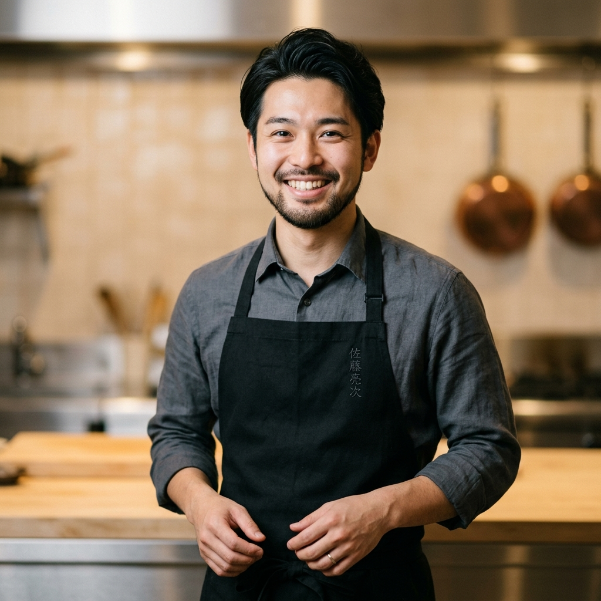

Cerita KatsuBowl
Membawa cita rasa Katsu Rice Bowl premium orisinil langsung dari koki bersertifikasi Jepang ke meja makan Anda.

"Kami memiliki misi sederhana: menyajikan semangkuk kebahagiaan hangat melalui cita rasa Katsu Jepang yang sesungguhnya. Kualitas bahan, kerenyahan panko, dan kelembutan daging adalah integritas dapur kami."
Chef Kenji Sato
Founder & Head Chef KatsuBowlKualitas Tanpa Kompromi
Setiap mangkuk KatsuBowl disiapkan dengan standar presisi Jepang menggunakan bahan baku lokal kualitas ekspor.
Daging Filet Utuh
Hanya menggunakan bagian dada dan paha ayam filet utuh yang segar setiap hari. Bebas daging olahan/daging giling untuk mempertahankan serat juicy daging.
Beras Jepang Asli
Nasi yang disajikan memiliki tekstur pulen alami yang khas untuk menyerap saus dashi manis secara merata tanpa menjadi lembek.
Tepung Panko Premium
Balutan tepung roti khas Jepang berbutir kasar yang digoreng pada suhu konstan untuk menghasilkan kerenyahan maksimal yang tahan lama.
Saus Racikan Koki
Saus kari, mentai, dan kaldu dashi diracik secara manual (handmade) tanpa tambahan bahan pengawet buatan untuk menjaga cita rasa otentik.
Pertanyaan Bisnis & Katering
Ingin memesan KatsuBowl dalam jumlah besar untuk acara kantor, pesta, atau katering harian? Konsultasikan langsung dengan tim admin kami.
Hubungi Kami via WhatsApp